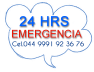
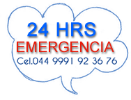

Las cirugías en la gran mayoría de los casos, no son urgencias, por lo tanto, se requiere de programación y preparación del paciente, así como una autorización escrita por parte del propietario y los análisis de laboratorio que se requieran de acuerdo al caso. Debe tener ayuno de sólidos y/o líquidos un tiempo previo, el cuál se le indicará. Empleamos los equipos más modernos de anestesia con oxígeno y fulguración (coagulación sanguínea y corte), así como los monitores electrónicos que nos indican los signos vitales de nuestros pacientes durante el proceso quirúrgico. Tenga Ud. La plena confianza que su mascota está en las mejores manos y que tratamos de tener el nivel tecnológico y de actualización más avanzado. La áreas de especialización son: Cirugía General, Estética, Reproductiva o ginecológica (Cesáreas, partos), Traumatología y Ortopedia, Urológica, Oncológica y Oftalmológica, con alta experiencia en cataratas con mínima invasión. Ejemplos de cirugías: General: Cirugía Estética (Orejas y cola), Tumores cutáneos, heridas en general, Prolapsos, Hernias, etc. Reproductiva: Ovario histerectomía (Castración en hembras), Orquiectomía (Castración en machos), Vasectomía, Cesáreas, etc. Gastrointestinal: Obstrucción intestinal, por cuerpos extraños, Gastrotomías, Enterotomías, Anastomosis intestinales, Torsiones intestinales, etc. Urológica: Cálculos Urinarios, Uretrostomía, Nefrectomías y Nefrotomías, etc. Traumatología y Ortopedia: Reparación de Fracturas de los diversos huesos del cuerpo y articulaciones. Oftalmológica: Defectos en Párpados y Córnea, Cataratas con Facoemulsificación (una pequeña incisión de 3 mm) con microscopio oftalmológico. Etc. Odontológica: Extracción y limpieza de piezas dentales con equipo ultrasónico, y mucho más.